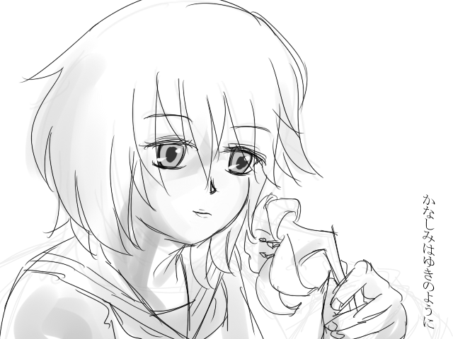
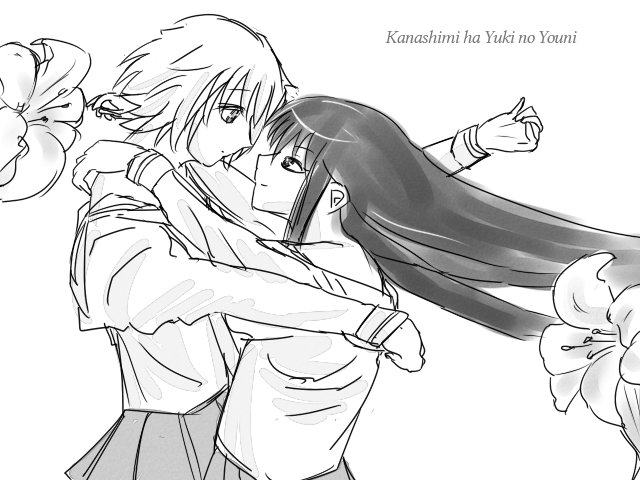
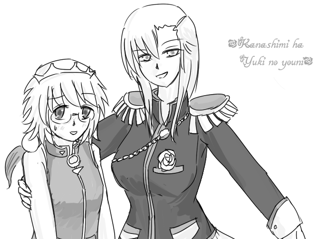
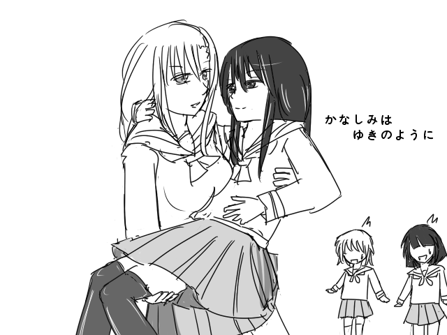
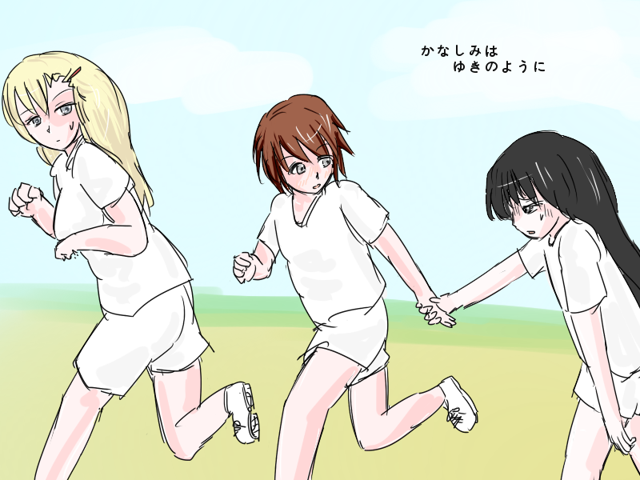

倉庫
以前のトップ絵とかを載せておく場所です。

初代トップ絵。とりあえず何もないと寂しいから置いとこうみたいな感じで描いた気がする。
珍しく元ネタはなし。

二代目トップ絵。初代がいまいち気に入ってなかったので一週間くらいで差し替えた。
この時点では深雪さんはまったく出番がなかった。
元ネタは神無月の巫女。

三代目トップ絵。そのにが終わったあたりに描いた気がする。
元ネタはわかりにくいけど少女革命ウテナ。

四代目トップ絵。そのさんの終わりからそのよんが終わるあたりまで、結構長くトップを飾ってた気がする。

五代目トップ絵。初めて色を塗りました。配色は適当。